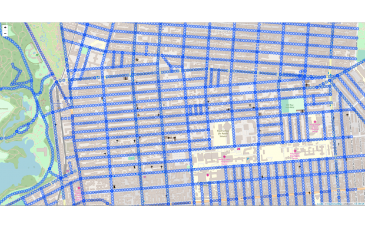

Data Science Overview
International Development Team
## High level topics * Skills/techniques * Tools * Projects & workflow
Skills and Techniques
Maths, computing, user design, domain/specialist knowledge...
## Maths * Statistics * Machine Learning * Deep Learning
## Supervised Machine Learning in 60 seconds * We have a bunch of data and we want to predict something * We create two sets: training and testing * We combine the variables we have (somewhat) randomly * Are we close to what we're trying to predict * Repeat...
## Computing * R and Python * Higher level programming language * Lots of libraries *Spark
## Computing * Git * Interacting with data sources/structures * Software development * Understanding distributed systems/cloud infrastructure
## But also: * Scala * Rust * Julia * Bash * Java * Matlab * And many more...
## More specialist knowledge * Economics * Visualisation/ design * Survey design * User interaction * Geospatial * Project management
## Environments * RStudio, Pycharm, Vim, Jupyter * DAP * UN Global Platform
## Outputs: * Reports * Automated Pipeline * Application/service * MORE DATA!!!
## Workflows * Understand your question/need * Find some data * Explore the data * Model the data * Visualise the outputs * Present/communitcate the outputs
Projects within ONS/ UN Global Platform
## Urban Forests 
## Urban Forests
## Urban Forests * Tools * Lots... * Skills * Lots... * Outputs * Reports and reusable workflows
## Natural Language Processing * Uses the relationships between words and groups of words * Optimus * Classifiying similar words * OECD SDG classifier * Mathcing reports to an SDG goal
## Faster Indicators * Economic indicators using new data sources: * Shipping data * VAT return data * Traffic data
## Green spaces #### (published yesterday) * Think Urban Forests but from above * Difficult to find good data * Used similar techniques to classify images
### Reproducible Analytical Pipelines * Automating repeated processes * Significant time saving * Can reduce errors when copying and pasting data from multiple sources
## Key Points * There are a wide variety of skills of tools * Most individuals won't have all of these * There is constant change and innovation
## Thanks! Any questions or thoughts? Any other topics that would be useful? Presentation made using reveal.js